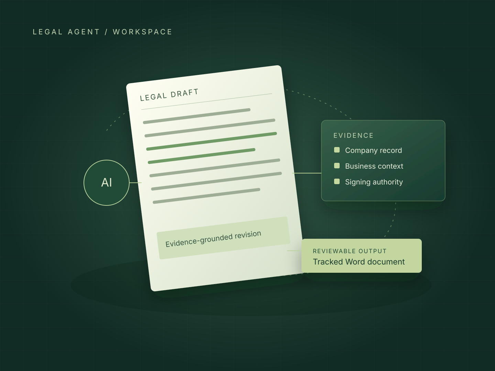
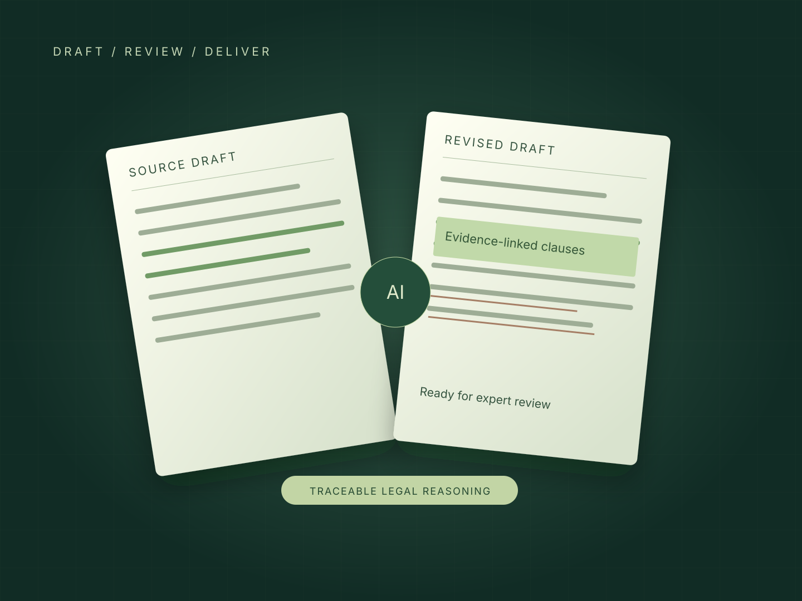
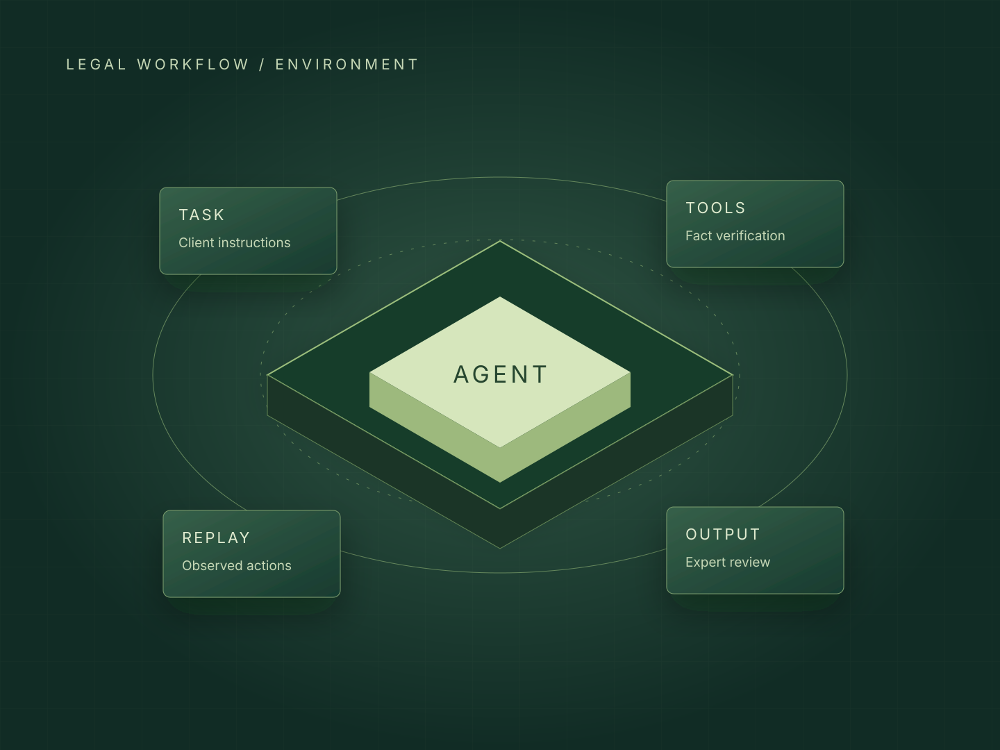

当前首页 · 推荐
AI 律师工作台
以合同为中心，连接 Agent、业务证据和可复核交付。既呈现法律主题，也强调工作环境，适合项目主视觉。
三种矢量概念图，沿用森林绿、鼠尾草绿与纸张色。均为视觉示意，不是产品截图或运行结果；首页当前采用第一种。

以合同为中心，连接 Agent、业务证据和可复核交付。既呈现法律主题，也强调工作环境，适合项目主视觉。

双版本合同与修订痕迹，直观表现从草稿到交付。观众容易理解目前已实现的合同任务，但项目范围显得更窄。

以 Agent 为中心，用环境连接任务、工具、回放和交付。更适合研究项目叙事，也便于未来扩展到合同以外的工作流。